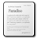

Collections
What are Collections?
At their core, Collections are containers of Assets that have particular metadata schemas associated with them. As well, each Collection can be though of as an archive or place to store and catalogue assets. If we think of Concerto as a museum, each Collection would be a room in the storage building, with a good card-catalogue.
Collections have a display name, a description, and a unique id that identifies them.
Assets in a given Collection can be arranged hierarchically and have their hierarchy changed, but cannot be moved to another Collection.
What is Metadata?
The term metadata refers to auxiliary and descriptive information about an asset.
For example, lets say that we have an asset that is a digital photograph. The data would be the image file itself, while the metadata are the information such as photographer, title, description, subject, date, shutter-speed, copyright, etc.
What is data and what is metadata can be a fuzzy distinction at times, and is not crucial to usage of the system. The term is defined here primarily as a reference to those outside of the library/cataloging world. The metadata schemas described below can hold arbitrary information be it data, such as the text of an essay, or metadata, such as the title of that essay. The metadata label is placed on them only to reflect their primary usage, not any limitations.
While Concerto only requires a display name for all Assets, structuring and entering rich metadata for assets is an important way to add value to a Collection. An image for example, is a very distinctive thing, but not one that can be searched for. Adding rich metadata that includes the creator, title, subject terms (keywords), and other fields -- such as those in the Dublin Core standard -- can allow that image to be located by searching in a variety of ways, making that image more useful and valuable that it would otherwise be.
Creating a Collection
The Create Collection Wizard
Assuming that you are authorized to create a collection, the "Create Collection" wizard is available from the "Collections Browsing" screen (click "Collections" in the main menu and look at the options at the top). In the wizard you will be given options to specify the display name and description for the collection. The display name must be just text, but the description can include HTML tags (to provide formatting and/or links or thumbnail images).
The second step of the wizard allows you to choose a type for the collection, for most uses the defaults are sufficient.
When you click "Save", the Collection will be created and you will be taken to the "Edit Collection" wizard's second step, which allows you to select which schemas you would like your collection to use, as well as what order they should be displayed in. At this step you can also create a new schema for your Collection to use.
Creating a new Schema
Clicking the "Save Changes And Create new Schema" button will take you to the Schema creation wizard. Here you can give a display name and description to the schema as well as add its fields.
Primarily, a Schema is a collection on fields. These fields define the structure of data that can be added to Assets in your Collection. Assets can have zero or more Records (sets of values) for each Schema.
Each field in the Schema has several properties associated with it, a display name, description, type, whether it is mandatory, whether it is repeatable, any authoritative values, and whether users can add authoritative values. These properties define the field and how users will interact with it when adding Records to Assets.
DisplayName/Description
The display name and description fields are for reference only and can be changed at any time in the future.
Type
This is the data type of a field specifies what the allow types and values can be entered for the field. For many fields the default, string, -- which supports text of arbitrary length -- should be sufficient, but for fields that have data of other types, the appropriate choice should be made:
- String:
- Text with arbitrary length.
- Short String:
- Text with a maximum length of 256 characters.
- DateTime:
- For storing date [and time], representing a point in time. Use this rather than strings for storing dates to force validation of dates as well as to allow searching for dates that fall into a given range.
- Integer:
- Integer (whole) numbers
- Float:
- Floating point (decimal/scientific notation) numbers
- Boolean:
- For True/False or Yes/no values
- Blob:
- "Binary Large OBject", this is to store binary data of arbitrary length
Once the Schema has been saved, the type can not be changed. If it were, data saved under its previous format would become inaccessble and lost. For this reason, be sure to choose the proper data type for each field.
isMandatory
If checked, a value for that field is required to be entered.
isRepeatable
If checked, multiple values can be entered for that field. An example of this is the common subject (sometimes known as keyword) field in many schemas. Subjects are lists of terms, often from a pre-defined list (See [[2. Tutorial Introduction#Authoritative Values]] below). When a field is repeatable, the user entering metadata is given a button to add additional values for the field. This is preferable to using a comma-delimited string as it allows for more powerfull searching of terms.
As with the type, once the Schema has been saved, isRepeatable can not be changed for existing fields. If it were, multiple values would become inaccessble and lost. For this reason, be sure to choose the proper option for each field.
Authoritative Values
Authoritative Values are a defined set of values that can be chosen from when adding metadata. These are especially helpful for defining lists of subjects or names of people to avoid differences in case or spelling. When users are adding metadata for a field with authoritative values, they will be given a drop-down list of possible values.
If the "Allow User Addition of Authoritative Values" option is selected, users will also be given a box to enter new values that will be added to the list. If this option is not selected, then only the values entered here will be available.
Usage of Authoritative Values also allows for users browsing the Collection to search for Assets by selecting those that match one or more of the Authoritative Values
Assets
Assets are the things that you are storing in the Concerto. Assets are generic and can represent images, audio, video, other media, text, or may simply be containers for other assets. In our museum medifor, the assets would be the items that the museum owns, however it defines the term 'item'. Some examples are listed below:
- An Image Asset
- This Asset represents a single image. It has one FileRecord (the image) and a [partial] Dublin Core Record for other information. The display name and description are the same as the Dublin Core title and description:
DisplayName: Trillium
Description: Large-flowered Trillium (Trillium Grandiflorum)
along the trail at Snake Mountain.
File Record:

IMG_4147_small.jpg
Dublin Core Record:
Title: Trillium
Description: Large-flowered Trillium (Trillium Grandiflorum)
along the trail at Snake Mountain.
Creator: Adam Franco
Date: 2005-05-21
Subject: flowers
Subject: plants
Subject: nature
Subject: Vermont
Coverage: Addison, Vermont, USA
Rights: 
- A Building Asset
- This Asset represents an architectual structure. It has several File Records (images/blueprints of the structure) and a [partial] Dublin Core Record for other information. The display name and description are the same as the Dublin Core title and description:
DisplayName: Mosque of Sultan Ahmed (Blue Mosque)
Description: The Blue Mosque, named so for the blue tiles on its ceilings,
is located in the oldest part of Istanbul, Turkey.
See
Wikipedia for more information.
File Record:

IMG_4837_small.jpg
File Record:

IMG_4767_small.jpg
File Record:

IMG_4762_small.jpg
File Record:

IMG_4735_small.jpg
File Record:

IMG_4734_small.jpg
File Record:

BluePrints.xyz
Dublin Core Record:
Title: Mosque of Sultan Ahmed (Blue Mosque)
Description: The Blue Mosque, named so for the blue tiles on its ceilings,
is located in the oldest part of Istanbul, Turkey.
See
Wikipedia for more information.
Creator: Adam Franco
Date: 2005-06-14
Subject: architecture
Subject: Islam
Subject: mosque
Subject: domes
Coverage: Istanbul, Turkey
Rights:
- A Book Asset
- This Asset represents a book. It has several File Records (Images of the Cover and title Page) and a Dublin Core Record for other information. The display name and description are the same as the Dublin Core title and description. This asset is also a container for other Assets, one for each chapter of the book. These child assets have file records for the scanned image of each page. They inherit their parent Asset's Dublin Core Record, and have the ASCII text of the chapeter as their Content.
As can be seen, Assets can be used and arranged in a variety of ways. It is up to those building a collection to choose how they would like to use the system to store their content.
Creating an Asset
(Documentation not yet complete)
Exhibitions
Exhibitions are groups of Slideshows arranged in a particular way. They are the primary way of presenting an organized set of Assets to end users. To continue with our museum medifor, an Exhibition is a selection of items that the museum groups together to show to visitors. These Assets may come from many Collections or only one, and many Assets may stay 'in storage' and not be on display.
Creating an Exhibition
(Documentation not yet complete)
Slideshows
Slideshows are sequences of Assets and text-slides. Each slide has display properties and can contain custom annotations, show the metadata of its Asset, both, or neither.
Creating a Slideshows
(Documentation not yet complete)